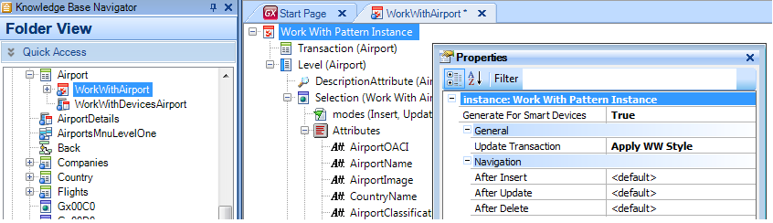

This property is deprecated since GeneXus X Evolution 3 and has been excluded from GeneXus Salto. It allows to generating objects based on the Work With Pattern for Web Mobile Applications (Smart Devices).  Values
See AlsoWeb Mobile Applications
|
| Backlinks | |
| GAM Authorization Scenarios | Category:GeneXus objects |
| Category:GeneXus objects (GeneXus 15) | HowTo: Manage Execute Permissions on WWSD LIST and SD Panels |